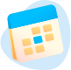

NEXARIS MEDICAL CENTER
Vivez en meilleure santé
Les soins essentiels, les professionnels et les services de santé réunis au même endroit. Trouvez simplement le service qu’il vous faut.
Votre compagnon de santé au quotidien

Accédez aux soins plus facilementRetrouvez les professionnels et choisissez la façon de consulter. Choisir un service CareNEXARIS MEDICAL CENTER
4pôles de santé
Un seul accèspour vos démarches de santé
En ligneaccédez aux services depuis vos appareils
VOTRE ESPACE SANTÉ
Votre santé. Vos informations.
Retrouvez vos services et vos démarches NEXARIS depuis votre espace personnel sécurisé.
Découvrir mon espace santéNEXARIS, PARTOUT AVEC VOUS
Vos services de santé, à portée de main
Retrouvez les quatre pôles NEXARIS depuis votre téléphone ou votre ordinateur.
Découvrir les services
VOUS ÊTES SOIGNANT ?
Rejoignez NEXARIS
Découvrez les parcours destinés aux professionnels de santé.- Présentez vos services aux patients
- Proposez des consultations et des soins à domicile
- Rejoignez un pôle NEXARIS adapté à votre activité